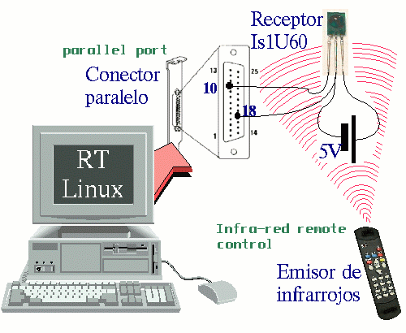
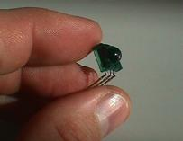
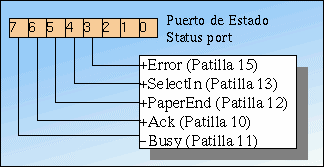
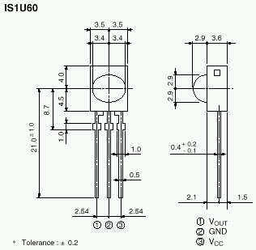

![[Foto del Autor]](../../common/images/Ismael-R.gif)
by Ismael Ripoll & Elisa Acosta About the author:
Elisa Acosta es Ingeniera en Informática por la
Politécnica de Valencia. Actualmente trabaja en
Indrá, en la problemática del año 1900 :-).
Content: |
![[Ilustracion]](../../common/images/illustration33.gif)
Abstract:
Utilizando un sencillo circuito eléctrico podemos hacer que RT-Linux reciba los comandos de un mando a distancia por infrarrojos.
El proyecto que vamos a abordar tiene aunque tiene una pequeña componente hardware, no se necesitan conocimientos electrónica.
Existe un proyecto llamado "lirc" (Linux Infra-red Remote Control) iniciado por Ralph J. K. Metzler (http://www-wjp.CS.Uni-SB.DE/~columbus/lirc/) en el que se ha desarrollado un driver receptor de infrarrojos utilizando los servicios "normales" de Linux. Por "normales" me refiero a que no ha utilizado las extensiones de tiempo real RT-Linux. En este artículo abordamos la misma problemática, pero basándonos en RT-Linux.
El proyecto que vamos a realizar tiene una primera parte de desarrollo hardware relacionado con la conexión del receptor de infrarrojos al ordenador, y una segunda parte donde de desarrollo del sistema de Tiempo-Real que accede a este dispositivo. El hardware que vamos a necesitar es mínimo: un receptor de infrarrojos del fabricante Sharp (IS1U60) y unos pocos cables y conectores.
El receptor de infrarrojos IS1U60 es una maravilla de la electrónica, en un encapsulado de solo tres patillas (dos de las cuales son las de alimentación y masa) es capaz de llevar a cabo casi todo el trabajo de recepción y conversión, entregando en la tercera patilla una señal TTL serie.
|  |
| Visión global del systema y conexionado eléctrico. |
El PC dispone de multitud de conectores para conectar todo tipo de periféricos digitales (modems, impresoras, SCSI, teclado, monitores, etc...), pero no está preparado para conectarse a elementos electrónicos simples. En otras palabras, un PC normal no dispone de una tarjeta de adquisición de datos que pueda leer la tensión (voltaje) de una determinada línea.
Por suerte para todos, el puerto paralelo (y también el puerto serie) se puede utilizar como un puerto de entrada/salida genérico. Muchos periféricos utilizan esta característica para comunicarse con el PC, como por ejemplo una unidad Iomega ZIP(R).
Nosotros utilizaremos el puerto paralelo para recibir datos del receptor de infrarrojos. Sólo necesitaremos una patilla del puerto paralelo, pues el receptor de infrarrojos sólo tiene una patilla de datos.
Como ya he comentado, el IS1U60 es un receptor de infrarrojos diseñado especialmente para construir receptores de aparatos domésticos.
La señal emitida por un mando a distancia es realmente compleja, pues en ella se unen varios tipos de codificación y modulación. Veamos detenidamente cómo es esta señal.
El medio físico que transporta la señal del mando a distancia es una onda luminosa en el rango de los infrarrojos. Este tipo de luz no es en absoluto peligrosa para la salud, a diferencia de la luz ultravioleta. La luz infrarroja es invisible al ojo humano, pero no a los dispositivos semiconductores. Fuentes de luz infrarroja son: el sol, cualquier bombilla de incandescencia, diodos LED's, etc. Un LED es lo que utilizan los mandos a distancia para emitir la señal.
| Luz infrarroja | Visible | Luz ultravioleta |
|
|
||
Todos los dispositivos semiconductores son sensibles a la luz (a todo tipo de luz), de hecho este es el principal factor que determina el encapsulado de los chips: un plástico completamente opaco, normalmente negro. Un sensor de infrarrojos está construido básicamente por una unión semiconductora recubierta por un cristal que sólo deja pasar la luz infrarroja.
Un sensor de infrarrojos construido de esa forma será capaz de detectar la presencia de cualquier luz infrarroja, independientemente de la fuente que la genere. Los diseñadores de mandos a distancia tuvieron que añadir una característica diferenciadora a la luz emitida desde un mando a distancia para hacerla distinguible del resto de fuentes luminosas. La señal emitida por un mando está modulada a una frecuencia entre 32 y 40 Khz, dependiendo del fabricante y modelo del mando a distancia. En adelante supondremos que la frecuencia del mando a distancia es de 38 Khz, pues suele ser el valor más común. Mas del 90% de todos los mandos estudiados utilizan esta frecuencia o una muy próxima.
|  |
| El receptor de infrarrojos. |
No tenemos que perder de vista que todo lo que se haga para emitir la señal, luego durante la recepción se tendrá que deshacer. Si se emite luz infrarroja, luego se tendrá que recibir; si esta señal se modula con una portadora de 38Khz luego se tendrá que eliminar (filtrar) esa portadora. La demodulación se realiza analógicamente con un sencillo filtro paso banda (eliminar todas las frecuencias que no sean próximas a la frecuencia de emisión) junto con un rectificador/integrador.
Luz infrarroja modulada a una frecuencia de 38 Khz, es el medio de comunicación entre el emisor (mando a distancia) y el receptor (TV, vídeo, etc.). Ahora queda por determinar cómo se transmite la información, esto es, los bits que identifican la tecla del mando a distancia que se ha pulsado.
La forma de codificar la información depende de cada fabricante, pero por suerte, en este proyecto no necesitamos conocerlas, sólo necesitaremos compararlas.
Es evidente, dada la forma de modular la señal, que la información se transmite en serie, esto es, un bit detrás de otro, y por tanto sólo necesitamos una línea (de datos) para recibirla.
La siguiente figura está obtenida directamente de las hojas de especificaciones del receptor IS1U60 (http://ns14.sharp.co.jp/ecg/unit/is1u60/is1u60-fea.html ), y muestra la estructura interna. La dos flechas de la izquierda representa la luz infrarroja, que es convertida en una señal eléctrica por el led. La señal se amplifica, se le elimina la componente continua, se filtra para dejar pasar solo frecuencias próximas a 38Khz, luego se rectifica (demodulador + integrador), y finalmente se convierte en una señal compatible TTL.
El puerto paralelo está pensado y diseñado para comunicarse con impresoras, pero con el paso del tiempo, y a falta de otra cosa mejor, el puerto paralelo se ha ido utilizando para conectar todo tipo de periféricos.
Actualmente existen al menos dos variantes (ECP, EPP) diseñadas para transformar el puerto paralelo en un verdadero puerto de comunicaciones de uso general. Nuestro proyecto es bastante modesto en cuanto a las prestaciones que necesitamos del puerto paralelo, por lo que cualquier versión de éste nos servirá. De hecho necesitaremos una solo línea de entrada.
|  |
| Detalle del registro de estado |
El puerto paralelo está controlado desde el PC por tres registros de 8 bits. Hay un registro de datos (0x378) , uno de estado (0x379)y otro de control (0x37A). Los valores entre paréntesis representan las direcciones usuales de los registros del primer puerto paralelo.
Escribiendo en el registro de control se puede programar el funcionamiento del puerto. De los 8 bits del registro, sólo nos interesa el bit 4. Escribiendo un "1" en este bit, el hardware del puerto paralelo generará una interrupción (normalmente la número 7) cuando detecte que la línea de estado ACK pasa de nivel alto (5 voltios) a nivel bajo (0 voltios).
El registro de datos es una puerta directa a las patillas del conector. Cualquier dato que escribamos en ese puerto, aparecerá en las patillas 2 a 9 del conector paralelo. Este puerto es sólo de salida, por lo que no podemos saber el valor ("0" o "1") de las patillas del conector leyendo el puerto. Puesto nosotros tenemos que leer los valores que el receptor de infrarrojos entregue, este puerto no nos sirve.
El puerto de estado refleja el estado de las líneas de control con la impresora. Mediante estas líneas la impresora es capaz de informar al ordenador sobre el estado en el que se encuentra. Son líneas que gestiona la impresora (o dispositivo externo) y que lee el ordenador, por tanto son líneas de entrada. Aunque el registro es de 8 bits, solo los 5 bits de mayor peso están conectados a las líneas, los otros tres bits están siempre a cero. Los nombres de las líneas tienen su origen en la función que desempeñan cuando se utilizan para comunicarse con una impresora, pero realmente estas líneas son unas entradas digitales genéricas que se pueden utilizar para casi cualquier cosa.
De estas 5 líneas la más interesante es la patilla 10 (bit 6 del registro), pues además de servir como línea de entrada digital, también se pueden producir interrupciones cuando la línea cambia de estado (de 5 a 0), tal como antes comentaba.
|  |
| Descripción física del encapsulado y patillaje |
El receptor de infrarrojos necesita una tensión de alimentación entre 4.7 y 5.3 Voltios. Si la tensión baja de 4.7 el receptor deja de funcionar. Esta tensión se puede conseguir de varias formas:
Utilizando pilas. En este caso es recomendable utilizar una pila de 4V5 en serie con una de 1V5. La tensión real entregada no será de 6V sino de 5.5.
Utilizando una fuente de alimentación (aparato que convierte tensión alterna en tensión continua de bajo voltaje). Aunque su construcción es muy sencilla, se sale de ámbito de este artículo.
Sacar los 5Voltios del propio ordenador. Dentro de un ordenador hay básicamente dos tipos de cables: cables planos (que llevan datos) y cables más gruesos de colores rojo, negro y amarillo que son los de alimentación. El cable rojo es el +5V y el cable negro es la masa o 0V.
Para alimentar al receptor, conectaremos el cable negro con la patilla 2 del receptor y el cable rojo (5V) con la patilla 3.
La conexión es algo tan sencillo como conectar la patilla número uno del receptor de infrarrojos a la patilla 10 del puerto paralelo y la patilla 2 del receptor de infrarrojos a patilla 18 del puerto paralelo. Observa que la patilla GND (Ground, masa) ha de estar conectada a dos lugares: Masa de la alimentación y masa del puerto paralelo.
Para hacer todas estas conexiones puedes utilizar cualquier tipo de cable.
| Módulo de TIEMPO-REAL |
|---|
#define PERIOD 100
#define SIZE 8192
#define FIFO_ZERO 0
#define LP0 0x378 /*Address /dev/lp0*/
#define STS LP0+1
RT_TASK task;
//---------- Tarea de tiempo real
void Real_Time_Task(){
unsigned short data1, data2=0;
unsigned long cont = 0L;
while(1){
// Leer el valor del puerto
data1=inb(STS) & 0x40;
// Si no ha habido cambio..
if ( data2 == data1) {
// Incrementar el contador.
cont++;
} else {
// Enviar el valor del contador.
rtf_put(FIFO_ZERO,
(char *) &cont,
sizeof(cont));
cont = 0L;
data2 = data1;
}
rt_task_wait();
}
}
//------------- Programa principal
int init_module(){
RTIME now = rt_get_time();
// Crear la FIFO de comunicación con Linux.
rtf_create(FIFO_ZERO,SIZE);
// Crear la tarea de tiempo real.
rt_task_init(&task,Real_Time_Task,1,3000,4);
// Hacerla periodica.
rt_task_make_periodic(&task,now+3000,PERIOD);
return 0; // Todo ha ido bien.
}
//------------- Para descargar el módulo
void cleanup_module(){
rt_task_delete(&task);
rtf_destroy(FIFO_ZERO);
}
|
La foma más sencilla de medir el estado de la patilla ACK del puerto paralelo es crear una tarea periódica que se encargue de leer el estado del bit (patilla). Si detecta un cambio, mientras que la patilla no cambie de estado, se incrementa un contador que representa el tiempo que el bit ha estado a ese nivel. Cuando se detecta que el valor ha cambiado, se envía el valor del contador a una tarea de Linux normal a través de una FIFO. Un proceso Linux tiene que estar esperado a leer de esa FIFO. Los valores que lee son alternativamente la duración del pulso a nivel bajo y luego a nivel alto de la señal enviada por el mando a distancia y recogida por el receptor de infrarrojos.
Realizar una buena medida de la señal entregada por el receptor de infrarrojos es fundamental, de hecho, este es el único motivo que justifica el uso de tiempo real. Interpretar la secuencia de valores que entrega la tarea de tiempo real, para identificar a qué tecla concreta correspondiente no tiene ninguna restricción temporal y se puede llevar a cabo en un proceso normal de Linux.
Otra forma de medir los cambios en la patilla ACK es instalando un manejador de interrupciones en la interrupción 7. Esta otra solución no necesitaria de un planificador ni de una tarea periódica.
La funcion init_module se ocupa de poner en marcha la tarea. Sólo hay que crear la FIFO por la que se comunicará la tarea, luego crear la tarea y finalmente convertirla en periódica. El valor del periodo (100 RT-Ticks lo que es más o menos 90 micro-segundos) se ha obtenido por prueba y error. Cuanto menor es el periodo mayor es la resolución de la medida, pero por contra más sobrecarga produce la tarea.
El siguiente programa de usuario imprime por la salida estándar lo que lee del dispositivo /dev/rtf0. Con este simple programa podemos "ver" la forma que tiene cada una de las tramas que el emisor de infrarrojos envía cuando se pulsa una tecla.
| Programa de usuario |
|---|
#include |
El valor 700 que aparece en el programa es un valor estimado y representa el tiempo mínimo entre dos tramas consecutivas.
Aunque la mayoría de mandos a distancia utilizan una señal infrarroja similar, la forma de codificar las teclas puede ser bastante distinta. Reconocer la tecla pulsada es un problema de "reconocimiento de formas" y no de "tiempo real". La mejor forma de construir un programa que reconozca un mando concreto es mirando la salida de este programa para hacerse una idea de cómo exactamente nuestro mando concreto emite los datos.
Simplificándolo mucho, podemos decir que cuando se pulsa una tecla del mando a distancia éste envía una secuencia de pulsos que nosotros veremos en pantalla como una secuencia de números. Mientras mantengamos la tecla pulsada, el mando enviará la misma secuencia de forma periódica (los mandos Sony suelen ser una excepción).
Veamos una ejecución (hay que acordarse de instalar los módulos de tiempo real que necesitamos: las fifo y el planificador) :
# modprobe rt_fifo_new # modprobe rt_prio_sched # insmod ir # ir_get 0 126509 13 6 23 7 13 7 12 7 12 7 12 7 12 8 11 8 11 8 11 8 11 8 11 19 11 1081 13 6 23 7 12 7 12 8 11 8 11 8 11 8 12 7 12 8 11 8 11 8 11 19 11 1080 14 6 23 7 12 7 12 7 12 7 12 8 11 8 11 8 11 9 11 7 12 8 11 19 11 1080 13 6 24 6 13 7 12 7 12 7 12 7 12 7 12 8 11 8 11 8 11 8 11 19 11
Como se puede observar, este mando repite la misma secuencia mientras se mantenga pulsada la tecla. Otra cosa que se puede apreciar es el error de medida. Los números de distintas tramas sólo tienen una variación de 1, que representa el error de cuantificación.
Para construir un reconocedor sólo tenemos que guardar en un array cada una de las tramas que envía nuestro mando, y luego cada vez que nos llega una trama buscamos (permitiendo un error de más menos uno) con todas las que tenemos en el array de tramas. Este programa se deja como ejercicio para el lector.
Algunos mandos emiten una trama distinta cada vez que se pulsa una tecla, aunque estemos pulsando siempre la misma tecla. Lo que hacen es lo siguiente: Cuando se pulsa una tecla envían una trama que llamaremos "TramaA", luego si soltamos y volvemos a pulsar emiten "TramaB" luego la siguiente vez que pulsemos vuelven a emitir "TramaA" y así sucesivamente. Si se mantiene la tecla pulsada se emiten varias veces la misma trama. De esta forma, el receptor puede distinguir si es una pulsación larga o dos pulsaciones seguidas. ¿Cómo crees que se ponía el canal 11 en los mandos más nuevos?
Artículo original en castellano
|
Webpages maintained by the LinuxFocus Editor team
© Ismael Ripoll & Elisa Acosta LinuxFocus 1999 |
1999-12-30, generated by lfparser version 0.6